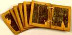

Wastafeltjes met aantekeningen van zakelijke aard. Acht plankjes, groot circa 45 x 60 mm en 2 tot 3 mm dik, aan beide zijden verdiept en met zwarte was bestreken, met uitzondering van het eerste, dat alleen aan de keerzijde is bewerkt; schrijfvlak circa 30/35 x 45/50 mm. Thans verbonden door een koordje, waarvoor telkens twee gaatjes in de randen van de tafeltjes zijn geboord; sporen van een oudere hechting door middel van tweemaal twee gaatjes in de bovenmarge, waarin resten van een ouder fijner koord. Holland, vijftiende eeuw. -- (BPL 2088)
In laat-middeleeuwse rekeningen, kronieken en andere bronnen uit onze streken is nogal eens sprake van wastafeltjes. Ze werden blijkbaar vooral gebruikt voor schrijfwerk dat maar tijdelijk van belang was. Dat is wel de belangrijkste oorzaak dat zij vrijwel altijd verloren gingen. Het hier getoonde stel, dat administratieve notities bevat, zou volgens de overlevering bij een opgraving in Delft gevonden zijn.
Literatuur
- Sc. de Vries, ‘Het gebruik van ‘wastafeltjes’ in de Nederlanden’, in: Oud-Holland, 12 (1895), p. 1-6, vooral p. 6.
- Vergelijk nummer 4.
| vorige pagina | top pagina |